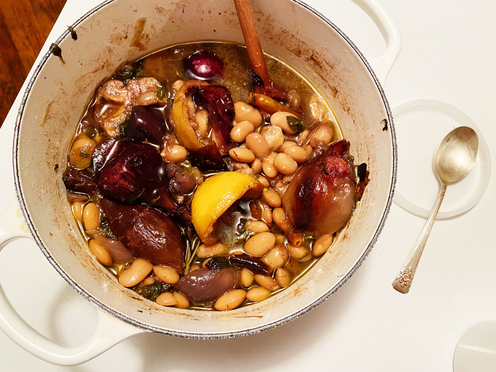

Brothy Beans

Description
Adapted from Alison Roman. I love beans in broth. Alison's cooking technique - simple, scrappy, adaptable, approchable - comes through in this recipe of pure comfort. This is my go-to when I don't know what to make and want to use things from my pantry.
Ingredients
- 1/4 cup olive oil
- 2 small or 1 large onion, quartered through the root (I don’t peel)
- 1 or 2 heads garlic, halved crosswise (I don’t peel)
- 1 lemon, halved crosswise
- 1 small bunch or a few sprigs dried herbs like oregano, marjoram, thyme or rosemary
- a few dried chiles (or one fresh one, halved lengthwise)
- 1 pound dried beans (about 2 cups)
- 6 or so cups water
- Kosher salt
Steps
- Heat olive oil over medium heat in a large pot. Add onions, garlic and lemon. Cook until they’re caramelized and nicely browned, a few minutes or so. This step will do a huge favor to your broth, adding depth and complexity non-caramelized ingredients could only dream of.
- Add dried herbs and chili. Add beans and water. Season with salt, bring to a boil. Turn the heat down to a bare simmer, leave the pot uncovered and cook until, as Steve Sando from Rancho Gordo puts it, “they’re done.” This can take anywhere from 50 to 120 minutes depending on the size and age of the bean.
- If the beans need more liquid as they simmer, add more water. Depending on the bean and your preference for their final destination, the beans can be creamy and fall apart-y or tender and semi al-dente. I am not a bean expert, just a bean enthusiast, but just know I feel like the only way to truly ruin a pot of beans is if you buy old beans (they’ll never become tender).